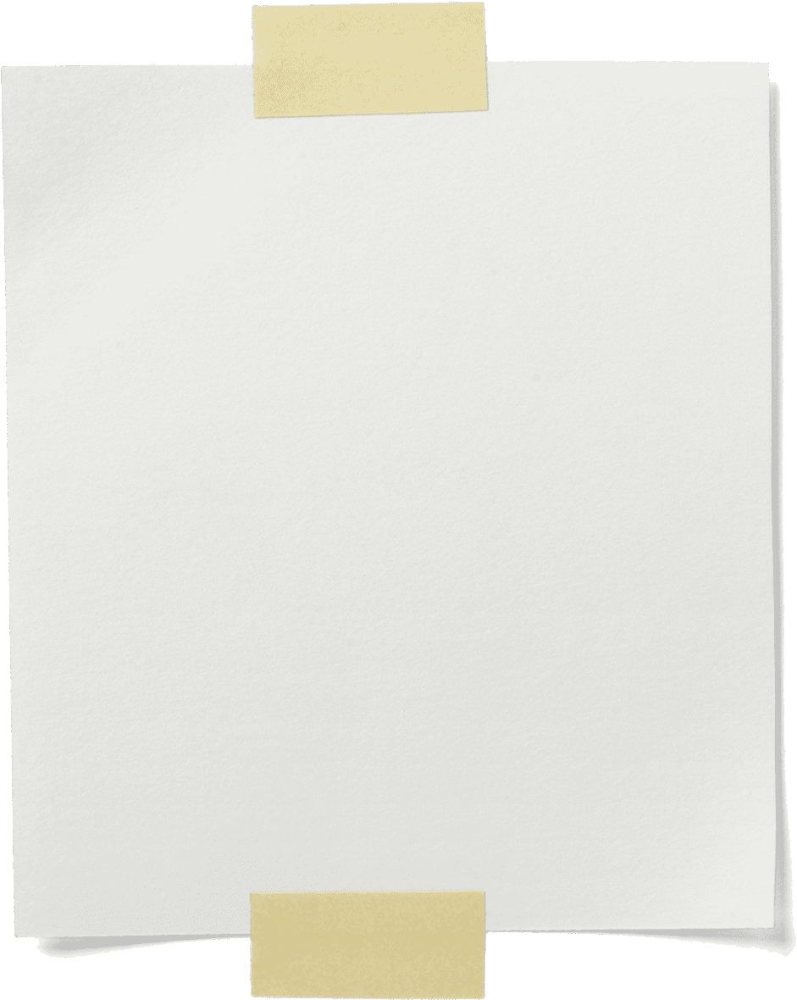

home
creative
topics: music, mostly
comments:
I do a lot of music and creative projects in my free time! c:
I have been doing audio engineering and music production work since 2020.
Since then, I have worked with many artists in the local Houston music scene, and have spent a lot of time in studio and even doing shows!
Mostly I do recording work and focus on school for now, but I always try to make
time to produce or write for new projects.
Currently, I'm working on a film project, a few projects with dancers, and doing audio gigs around Houston.
projects/experience
I do a lot of music and creative projects in my free time! c:
I have been doing audio engineering and music production work since 2020.
Since then, I have worked with many artists in the local Houston music scene, and have spent a lot of time in studio and even doing shows!
Mostly I do recording work and focus on school for now, but I always try to make
time to produce or write for new projects.
Currently, I'm working on a film project, a few projects with dancers, and doing audio gigs around Houston.
projects/experience